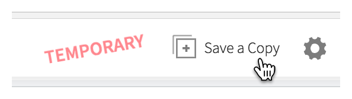

Final project oral presentation marking rubric
The data for the final project can be read into R on your own computer by running the following code chunk.
file_url <- "https://raw.githubusercontent.com/ntaback/UofT_STA130/master/project/hazardousdriving.csv"
hazarddat <- read.csv(file_url)Instead of working on the project on your local computer you can work on it using rstudio.cloud by going to the final project link.
When you access the project created by Prof. Taback, RStudio Cloud automatically creates a temporary copy of the original project for you. You can play with and make edits to it, but none of your changes will be reflected in the original. If you’d like to keep the changes you’ve made, just save a copy of the project for yourself by pressing the Save a Copy button.

You can learn more about rstudio.cloud here.